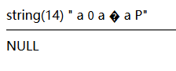
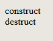

UTF-8字符集范围
- UTF-8是unicode的一种实现方式，其他还有UTF-16等。Unicode作为一种通用字符集，包含了全世界所有字符，每个字符一个独立的编码。汉字的unicode编码表可以在此处查询：http://www.chi2ko.com/tool/CJK.htm
- UTF-8是一种变长的编码方式，长度从1到6不等。从字符第1个字节就能知道该字符占几个字节。比如”中”，UTF-8编码是%E4%B8%AD，显然是在e0-ef范围内，表明其占用3个字节。汉字基本都是3个字节。中文输入状态下的符号，比如间隔号”·”，其编码是%C2%B7，在c0-df范围之间，则表示其占2个字节
- 下表是UTF-8字符集的范围
0xxxxxxx (00-7f) (1个字节)
110xxxxx 10xxxxxx (c0-df)(80-bf) (2个字节)
1110xxxx 10xxxxxx 10xxxxxx (e0-ef)(80-bf)(80-bf) (3个字节)
11110xxx 10xxxxxx 10xxxxxx 10xxxxxx (f0-f7)(80-bf)(80-bf)(80-bf) (4个字节)
111110xx 10xxxxxx 10xxxxxx 10xxxxxx 10xxxxxx (f8-fb)(80-bf)(80-bf)(80-bf)(80-bf) (5个字节)
1111110x 10xxxxxx 10xxxxxx 10xxxxxx 10xxxxxx 10xxxxxx (fc-fd)(80-bf)(80-bf)(80-bf)(80-bf)(80-bf) (6个字节)
参考
PREG_BAD_UTF8_ERROR
- php的 preg_replace() 函数可以使用模式修 饰符，其中 u 修饰符的作用是将字符串当作utf-8来判断，如果字符串中存在无效的utf8字符，就会返回null
u (PCRE_UTF8)
此修正符打开一个与 perl 不兼容的附加功能。 模式和目标字符串都被认为是 utf-8 的。 无效的目标字符串会导致 preg_* 函数什么都匹配不到； 无效的模式字符串会导致 E_WARNING 级别的错误。 PHP 5.3.4 后，5字节和6字节的 UTF-8 字符序列被考虑为无效（resp. PCRE 7.3 2007-08-28）。 以前就被认为是无效的 UTF-8。
测试代码
- 在php中，单引号内的 \xdd 格式的字符是不会被解析成utf8的，需要用双引号
1 |
|
测试结果
- 可以看到，因为 $old 中存在 \xFF 这个不合法的utf8字符，所以 $new 获取到的值是null

参考
PHP魔术方法
| 方法 | 描述 |
|---|---|
| __sleep() | serialize() 时调用 |
| __wakeup() | unserialize() 时调用 |
| __toString() | 返回一个字符串 |
| __invoke() | 当尝试以调用函数的方式调用一个对象时调用 |
| __set_state() | var_export() 时调用 |
| __debugInfo() | var_dump() 时调用 |
| __construct() | 构造函数，创建新对象时调用 |
| __destruct() | 析构函数，对象的所有引用删除或对象销毁时调用 |
参考
phar反序列化
phar://数据流包装器自PHP 5.3.0起开始有效- 要将php.ini中的
;phar.readonly = On改为phar.readonly = Off
测试代码
1 |
|
测试结果
- 生成phar文件
1 | GET/phar_test.php |

- 读取phar文件
1 | GET/phar_test.php?action=l |

参考
POST文件上传
代码
<form>标签中需要加enctype="multipart/form-data"，否则不会上传文件
1 | <form method="POST" enctype="multipart/form-data"> |
HTTP报文
- 其中 boundary 是设置参数的分隔符，是随机生成的
- 真正的分割符除了
boundary外，还要在前面加-- - 分割符最后要换行，换行符是
\r\n - 最后一行分隔符是
--加 boundary 加--
1 | POST /index.html HTTP/1.1 |